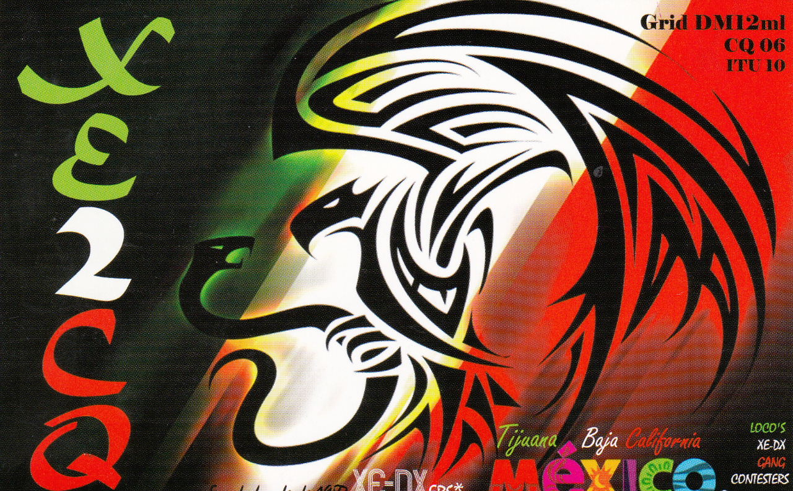
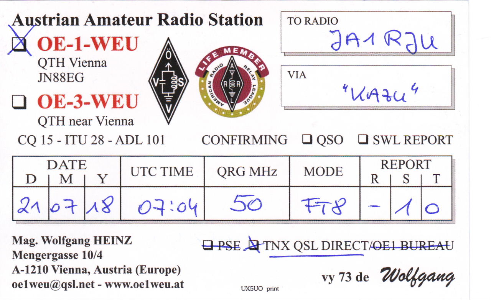
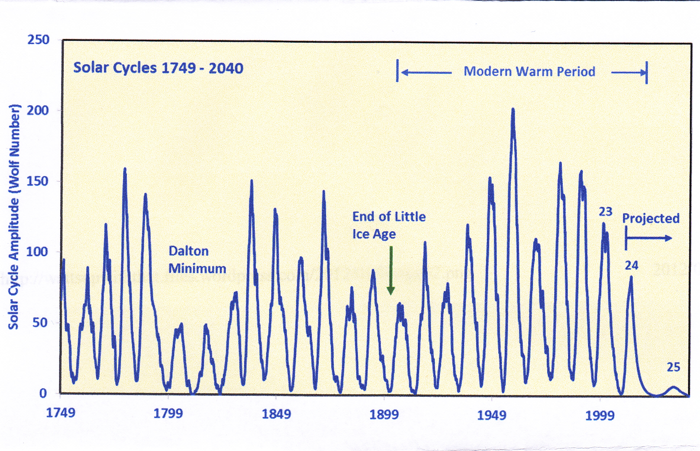

Flash ! DX
|
 


|
|
|
|

|
|
|
[Back Issues Apr.2019]
TIME:UTC(JST-09:00)
Report from JA1RJU(PM95sq)
30.Apr.2019(15:00c)
------------------------------------------------------------------------
DU6/PE1NSQ 08:01.00 50.313.2797 FT8 +06dB CQ into JA1
DU6/PE1NSQ 08:01.30 50.313.2797 FT8 +08dB QSO with JA1
↓
DU6/PE1NSQ 08:22.00 50.313.2677 FT8 +12dB QSO with JA1/2
↓
VK8AW 08:25.00 50.313.1134 FT8 -07dB QSO with JA1/2/3/4/6
↓
DU6/PE1NSQ 08:35.30 50.313.2677 FT8 +07dB QSO with JA1/2
VK8AW 08:25.00 50.313.1134 FT8 -07dB QSO with JA1/2/3/4/6
↓
DU6/PE1NSQ 08:43.00 50.313.2688 FT8 +09dB/+05dB QSO(50W)
DU6/PE1NSQ 08:45.30 50.313.2688 FT8 -14dB QSO with JA1/7
VK8AW 08:46.30 50.313.1134 FT8 -20dB into JA1
↓
------------------------------------------------------------------------
◎天皇陛下の"退位"により「平成」が最後となる今日(4/30)、6mでは午後から久しぶ
りにDU6 ＆ VK8の入感があった。午前中からJA1ではJR6/JS6などのEsの入感があり、
国内QSOでも賑わった。5月1日から新元号【令和(れいわ)】がスタートする。
今年も夏のEsシーズンの6m-DXの入感を期待したい。
------------------------------------------------------------------------


Report from JA1RJU(PM95sq)
29.Apr.2019(15:00b)
Report from JA1RJU(PM95sq)
28.Apr.2019(15:00b)
◎ 第61回 ALL JA Contest
Report from JA1RJU(PM95sq)
27.Apr.2019(15:00c)
◎ 第61回ALL JA Contest
Report from JA1RJU(PM95sq)
26.Apr.2019(15:00b)
Report from JA1RJU(PM95sq)
25.Apr.2019(15:00b)
Report from JA1RJU(PM95sq)
24.Apr.2019(15:00b)
Report from JA1RJU(PM95sq)
23.Apr.2019(15:00b)
Report from JA1RJU(PM95sq)
22.Apr.2019(15:00b)
Report from JA1RJU(PM95sq)
21.Apr.2019(15:00b)
Report from JA1RJU(PM95sq)
20.Apr.2019(15:00b)
Report from JA1RJU(PM95sq)
19.Apr.2019(15:00b)
Report from JA1RJU(PM95sq)
18.Apr.2019(15:00b)
Report from JA1RJU(PM95sq)
17.Apr.2019(15:00c)
-----------------------------------------------------------------------
(S59A Drago=T77C 06:18:58.
We LOGed 3 more stations ( N1DG,WZ8D and WT8V),there were JR1LZK and
KR7O heard with good signals but no complete QSO)
-----------------------------------------------------------------------
Report from JA1RJU(PM95sq)
16.Apr.2019(15:00c)
-----------------------------------------------------------------------
(S59A Drago=T77C 05:33:38.
Lucky ones got throught the noise were : JR2SQZ,K4PI,K9CT,N3XX.K4JWA
and W8OI. So last standing is 61 in the LOG)
-----------------------------------------------------------------------
Report from JA1RJU(PM95sq)
15.Apr.2019(15:00c)
W7GJ 09:14.00 50.190 JT65a -11dB EME QSO with JG1TSG
UR5LAK 12:00.00 50.190 JT65a -27dB EME QSO with JG2BRI
↓
(S59A Drago=T77C 12:57:35 2x8YU7EF CQ 50193 T77C 1st.
We also heard "JA9SJI and N4QWZ", so total nr QSOs is 54)
↓
T77C 12:58.00 50.193 JT65a -24dB EME CQ into JG1TSG
T77C 13:00.00 50.193 JT65a -24dB EME CQ into JG2BRI
↓
T77C 13:56.00 50.193 JT65a -23dB EME CQ into JR2SQZ
↓
T77C 14:18.00 50.193 JT65a -26dB EME CQ into JR2SQZ
↓
T77C 14:54.00 50.193 JT65a -22dB EME CQ into JA7QVI
↓
T77C 14:56.00 50.193 JT65a -17dB EME CQ into JR2SQZ
↓
-----------------------------------------------------------------------
(S59A Drago GM,yday conds been bad,most of the time with no traces
but lucky ones who came thru were:
JR3DVL,VK5PJ,JE3GRQ,N9IW,N8GTI,NT0V,KA9CFD,VP8EME,WA9LFO,N9BCA,N2TIN
KR7O,WG8Q,KL7HBK,K7RWT and N6JV)
-----------------------------------------------------------------------
Report from JA1RJU(PM95sq)
14.Apr.2019(15:00d)
(Es & Sc JR6/JS6 JA2-JA6-JA7/8)
BI4NLB 04:03.30 50.313.**** FT8 QSO with JA1
BV3UF 05:05.00 50.313.1652 FT8 -12dB QSO with JA1
BM3GFU 05:21.30 50.313.**** FT8 -13dB into JA1
↓
W2HRO 05:54.00 50.162 JT65a -30dB EME CQ into JG2BRI
W7GJ 07:50.00 50.190 JT65a -20dB EME ↓
W7GJ 08:02.00 50.190 JT65a -11dB EME ↓
↓
KL7HBK 11:33.00 50.193 JT65a -20dB EME into JG2BRI
T77C 11:50.00 50.193 JT65a -25dB EME CQ into JG2BRI
T77C 11:52.00 50.193 JT65a -26dB EME CQ into JA7QVI
T77C 11:56.00 50.193 JT65a -20dB EME CQ into JA7QVI
T77C 12:08.00 50.193 JT65a -13dB EME CQ into JG2BRI
↓
T77C 13:50.00 50.193 JT65a -28dB EME CQ into JO1PSX
↓
T77C 14:56.00 50.193 JT65a -23dB EME CQ into JG2BRI
↓
Report from JA1RJU(PM95sq)
13.Apr.2019(15:00d)
(* T77C=>17 EME QSO at 12.Apr)
------------------------------------------------------------------------
W2HRO 05:28 50.195 JT65a -24dB EME QSO with JG2BRI
↓
DU7/PA0HIP 09:25.00 50.313.1240 FT8 -19dB QSO with JA1
DU7/PA0HIP 09:29.30 50.313.1397 FT8 -14dB CQ into JA1
DU7/PA0HIP 09:31.30 50.313.1397 FT8 -14dB QSO with JA1/5
↓
T77C 10:38.00 50.193 JT65a -23dB EME CQ into JG1TSG
T77C 10:45.00 50.193 JT65a -24dB EME QSO with JG1TSG
T77C 10:48.00 50.193 JT65a -15dB EME CQ into JG2BRI
T77C 10:49.00 50.193 JT65a -11dB EME CQ into JA7QVI
T77C 10:56.00 50.193 JT65a -20dB EME CQ into JG2BRI
T77C 11:02.00 50.193.200 JT65a -16dB EME QSO with JA7QVI
T77C 11:06.00 50.193 JT65a -25dB EME CQ into JG2BRI
HA8FK 11:06.00 50.197 JT65a -24dB EME CQ into JG1TSG
T77C 12:18.00 50.193 JT65a -25dB EME QSO with JG2BRI
T77C 13:17.00 50.193 JT65a -23dB EME CQ into ↓
T77C 16:03.00 50.193 JT65a -22dB EME CQ into ↓
↓
(* T77C(JN63fw)=S59A ANT=2x8el YU7EF)
------------------------------------------------------------------------
Report from JA1RJU(PM95sq)
12.Apr.2019(15:00b)
Report from JA1RJU(PM95sq)
11.Apr.2019(15:00d)
------------------------------------------------------------------------
(Es & Sc JA6/JA7/JA0)
(JA7QVI 02:51.15 50.313.1053 FT8 -13dB QSO with JA1)
(JA7QVI 02:59.15 50.313.1053 FT8 -15dB CQ(QM08) into JA1)
↓
(JS6TWW 04:56.15 50.313.1447 FT8 -15dB CQ(PL55) into JA1)
↓
(JS6TWW 05:32.45 50.313.1245 FT8 -15dB CQ/QSO with JA1)
↓
DU7/PA0HIP 09:34.00 50.313.1111 FT8 +14dB CQ with JA1
DU7/PA0HIP 09:35.00 50.313.1111 FT8 +13dB QSO with JA1
DU7/PA0HIP 09:48.00 50.313.608 FT8 +14dB QSO with JA1/2/3
↓
DU7/PA0HIP 10:04.30 50.313.1535 FT8 -14dB QSO with JA1
↓
Report from JA1RJU(PM95sq)
10.Apr.2019(15:00b)
Report from JA1RJU(PM95sq)
09.Apr.2019(15:00c)
------------------------------------------------------------------------
(Es= JA7/8 01:54- 50.313.**** FT8 CQ(QN12) into JA1/2/3/4/5/6)
BB6CJR 02:34.45 50.313.818 FT8 into JA1(PM96)
↓
(JR6FC 03:05.30 50.313.1285 FT8 +08dB CQ(PL36) into JA1)
↓
(JS6TWW 03:13.15 50.313.644 FT8 +14dB QSO with JA1)
(JS6TWW 03:14.15 50.313.644 FT8 +14dB CQ(PL55) into JA1)
↓JS6TKM.JR6QV.
(8J5TOBE/5 04:12.30 50.313.1549 FT8 -06dB CQ into JA1)
↓ (Es=JA3/4/5/6/7/8 & JR6KE)
HL2EIZ 04:25.00 50.313.**** FT8 +07dB into JR6 & JS6(PL55)
HL2EIZ 04:25.30 50.313.**** FT8 -06dB into JA1
HL2EIZ 04:38.45 50.313.1442 FT8 -10dB CQ(PM37) into JA1
↓
HL2EIZ 05.06.15 50.313.1716 FT8 -09dB/-10dB QSO
↓
9M2TO 05.31.15 50.313.**** FT8 -04dB into JA5/6
↓
(JA2/3/4/.8J5TOBE/5.JR6AG.etc)
↓
-----------------------------------------------------------------------
Report from JA1RJU(PM95sq)
08.Apr.2019(15:00b)
Report from JA1RJU(PM95sq)
07.Apr.2019(15:00c)
------------------------------------------------------------------------
BV3UF 04:16.15 50.313.2490 FT8 -05dB QSO with JA1
BV3UF 04:23.45 50.313.1596 FT8 +08dB/+04dB QSO
↓
BV3UF 05:04.00 50.313.1877 FT8 +11dB QSO with JA1/2/7/9/0
↓
BM3GFU 05:07.15 50.313.1248 FT8 -03dB QSO with JA5
BM3GFU 05:08.45 50.313.1251 FT8 -10dB CQ(PL04) into JA1
BM3GFU 05:09.30 50.313.973 FT8 -10dB QSO with JA1/7
↓
BI4SDT 05:29.00 50.313.2450 FT8 -10dB QSO with JA1
↓
BH5HAI 06:26.30 50.313.2316 FT8 -17dB QSO with JA1
BA5DX 06:30.30 50.313.2548 FT8 -05dB QSO with JA1
BA4EO 06:33.15 50.313.2608 FT8 -08dB QSO with JA1
HL1LUA 06:51.00 50.313.**** FT8 -12dB QSO with JA1
↓
BG2KAJ 07:02.30 50.313.**** FT8 -18dB QSO with JA1
HL1LUA 07:14.30 50.313.1175 FT8 +04dB/+02dB QSO
↓
BA5DX 07:18.15 50.313.712 FT8 -17dB CQ(PM00) into JA1
BA5DX 07:23.15 50.313.712 FT8 +11dB QSO with JA1/2
BA4MY 07:37.00 50.313.842 FT8 -03dB QSO with JA1/2/3/4
↓
BA4EO 07:41.00 50.313.380 FT8 -09dB QSO with JA1/2
↓
BH4SKP 07:45.30 50.313.1948 FT8 +13dB QSO with JA1/2/3/0
BH4SKP 08:00.00 50.313.1946 FT8 +01dB/-06dB QSO
↓
BA4MY 08:11.00 50.313.1608 FT8 +05dB/-10dB QSO
BA4MY 08:14.00 50.313.1811 FT8 -04dB QSO with JA12/3/4/0
↓
BH4ERB.BD2RJ.BG6CJR.BH4IGO.etc
----------------------------------------------------------------------
Report from JA1RJU(PM95sq)
06.Apr.2019(15:00b)
Report from JA1RJU(PM95sq)
05.Apr.2019(15:00b)
Report from JA1RJU(PM95sq)
04.Apr.2019(15:00b)
Report from JA1RJU(PM95sq)
03.Apr.2019(15:00b)
Report from JA1RJU(PM95sq)
02.Apr.2019(15:00b)
Report from JA1RJU(PM95sq)
01.Apr.2019(15:00c)
-----------------------------------------------------------------
◎天皇陛下の"退位"による「平成」に代わる新元号が【令和(れいわ)】
に決定、1374年前の「大化」から始まり248番目の元号として今日公
表された。出典は「万葉集」で、初めて日本の古典から引用された。
新元号は新天皇が即位する一ヶ月後の5月1日から使用される。
-----------------------------------------------------------------
